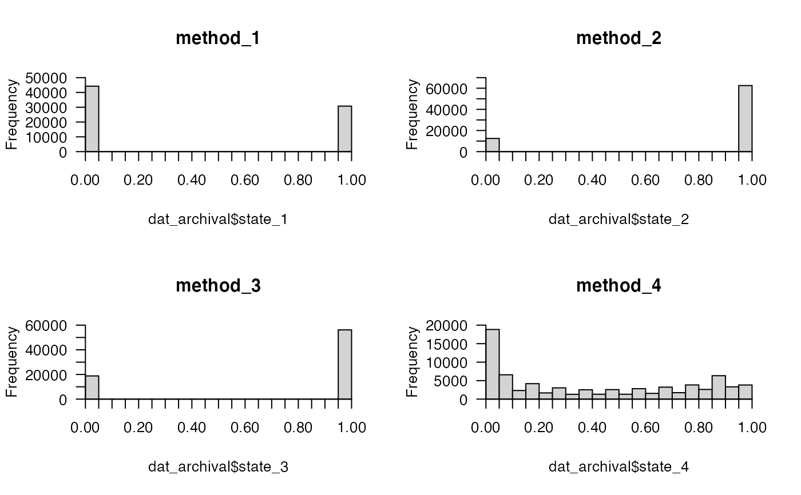
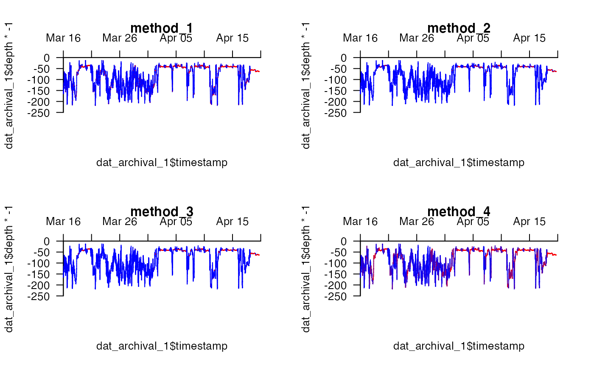

This function implements a simple threshold-based approach to identify periods of resting behaviour within depth time series collected from benthic animals. In these data, resting is usually inferred from low vertical activity and sinusoidal tidal traces that reflect the rise-and-fall of the tides on an individual's depth when it is stationary on the seabed. To implement the approach, a dataframe comprising depth time series (archival) is required. The algorithm identifies any time steps in which the change in depth is less than a specified value (th_depth) as potentially exhibiting resting behaviour. Candidate states (resting = 0, not resting = 1) assigned from this depth threshold can be smoothed by supplying a function (weights) that is applied to states over a time window (th_time). For example (weights = mean) calculates the mean state for each observation from all observations within th_time. Average state scores can be discretised into `resting' (0) or `not resting' (1) states by specifying the maximum score of an observation for it to be defined as `resting' via discrete. For example, if weights = mean and discrete = 0, then an observation is only defined as `resting' if all of the observations in the surrounding window (controlled by th_time) are also equal to zero. Higher scores dampen the effects of occasional movements that exceed the depth threshold. The function returns a numeric vector of average or discrete states, with one element for each observation in archival.
get_mvt_resting(
archival,
fct = NULL,
th_depth = 0.25,
th_time = NULL,
weights = mean,
align = "center",
...,
discrete = 0
)A dataframe that defines depth time series. This should contain a numeric column of depth observations named `depth'.
(optional) A character that defines the name of a column in archival that distinguishes independent time series.
A double that defines the depth threshold. Candidate resting behaviour is identified when the absolute change in depth is \(\leq\) th_depth.
(optional) An integer that defines the number of time steps (i.e., rows in archival) around each depth observation that should influence state assignment, via the weights function and related arguments (align, ... and discrete).
(optional) If th_time is provided, weights is a function applied to the candidate binary states assigned from the depth threshold (th_depth) within each time interval (th_time). The default is mean, which applies a rolling mean to the states within each window.
(optional) Additional arguments, passed to frollapply, that control the implementation of weights to each window (th_time). By default, align = "centre", which applies weights to the th_time/2 observation(s) centred around each observation. (The states for observations that are too close to the start or end of the time series for averaging are retained as initially assigned by th_depth but not averaged.)
(optional) If th_time is provided, discrete is double between 0 and 1 that defines the maximum score of an observation for it to be defined as `resting'. With the default weights = mean function, this is equivalent to the maximum proportion of `not active' observations in the window around each depth observation (th_time) for an observation to be defined as `resting'. For instance, discrete = 0 means that a `resting' is only defined if all of the observations around in the window around each observation are less than or equal to the depth threshold (th_depth), while discrete = 0.05 means `resting' is defined if \(\leq\) 5 percent of observations in the time window are below the depth threshold.
The function returns a numeric vector, of the same length as archival$depth, that defines, for each depth observation, either (a) a discrete behavioural state, if th_time = NULL or discrete is supplied (i.e., resting = 0, not resting = 1) or (b) an averaged behavioural score (0 - 1) over th_time.
This approach was motivated by the need to identify efficiently `resting' periods in depth time series data, sampled at a resolution of two-minutes, collected from flapper skate (Dipturus intermedius). While there are other approaches for the identification of resting behaviour, such as Hidden Markov models, for the flapper skate depth time series these are much more computationally demanding and appear to be much less effective at correctly assigning states.
#### Example (1): Assign 'resting' based on a simple depth threshold
dat_archival$state_1 <- get_mvt_resting(archival = dat_archival,
fct = "individual_id",
th_depth = 0.25)
#### Example (2): Assign 'resting' based on depth and time thresholds
# ... Under the default settings, all of observations in the time threshold
# ... must be below the depth threshold to qualify as 'resting'
dat_archival$state_2 <- get_mvt_resting(archival = dat_archival,
fct = "individual_id",
th_depth = 0.25,
th_time = 30)
#### Example (3): Dampen the effects of occasionally exceeding the depth threshold
# ... by increasing the proportion of observations that are allowed to
# ... exceed the depth threshold in a each time window
dat_archival$state_3 <- get_mvt_resting(archival = dat_archival,
fct = "individual_id",
th_depth = 0.25,
th_time = 30,
discrete = 0.05)
#### Example (4): Return average state scores via discrete = NULL
dat_archival$state_4 <- get_mvt_resting(archival = dat_archival,
fct = "individual_id",
th_depth = 0.25,
th_time = 30,
discrete = NULL)
#### Compare the frequency distribution of states among methods
# In the first example, a large number of 'resting' states are assigned
# In the second example, there are far fewer 'resting' states because all of the
# ... observations in the specified time window around each depth observation need
# ... to meet the depth threshold for the observation to be defined as 'resting',
# ... not just the observation itself.
# In the third example, there are sightly more 'resting' states because the
# ... criterion for all observations to meet the depth threshold has been weakened.
# In the final example, average scores have been returned.
pp <- graphics::par(mfrow = c(2, 2))
prettyGraphics::pretty_hist(dat_archival$state_1, main = "method_1")
prettyGraphics::pretty_hist(dat_archival$state_2, main = "method_2")
prettyGraphics::pretty_hist(dat_archival$state_3, main = "method_3")
prettyGraphics::pretty_hist(dat_archival$state_4, main = "method_4")

graphics::par(pp)
#### Compare the time series for an example individual for each method
## Filter results for specific individual
dat_archival_1 <- dat_archival[dat_archival$individual_id == 25, ]
## Define helper functions
# Define helper function to plot blank depth time series
plot_blank <- function(...){
prettyGraphics::pretty_plot(dat_archival_1$timestamp, dat_archival_1$depth*-1,
pretty_axis_args = list(side = 3:2),
type = "n",...)
}
# Define helper function to add depth time series, coloured by state, to the plot
add_lines_for_state <- function(state,...){
prettyGraphics::add_lines(x = dat_archival_1$timestamp,
y1 = dat_archival_1$depth*-1,
y2 = dat_archival_1[, state],...)
}
## Make plots
pp <- graphics::par(mfrow = c(2, 2))
# state 1
plot_blank(main = "method_1")
add_lines_for_state("state_1")
#> 1 observation pair(s) in x are NA; these are removed.
# state 2
plot_blank(main = "method_2")
add_lines_for_state("state_2")
#> 1 observation pair(s) in x are NA; these are removed.
# state 3
plot_blank(main = "method_3")
add_lines_for_state("state_3")
#> 1 observation pair(s) in x are NA; these are removed.
# state 4
plot_blank(main = "method_4")
add_lines_for_state("state_4")
#> 1 observation pair(s) in x are NA; these are removed.

graphics::par(pp)